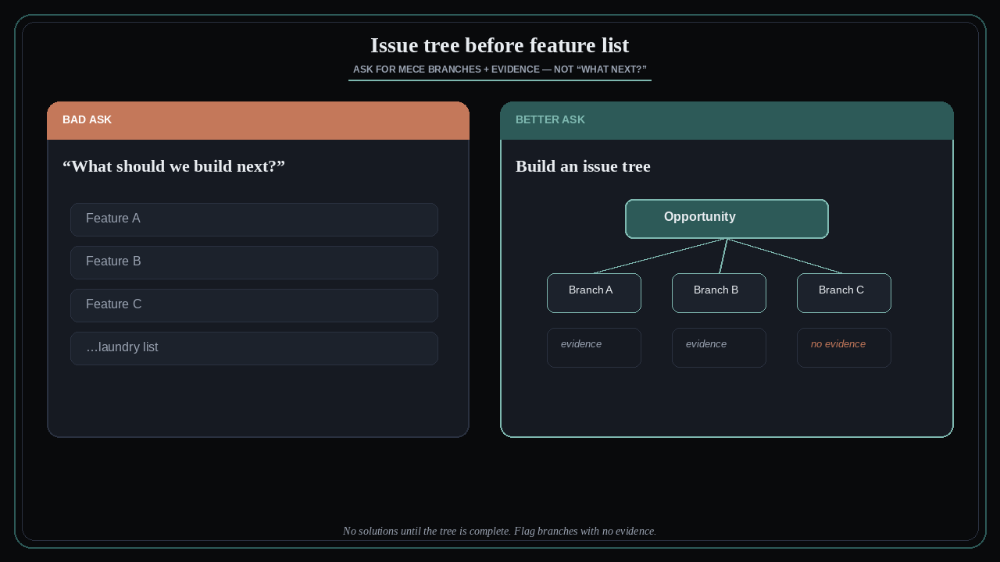

Stop asking what to build — grow an issue tree
Source: George / prodmgmt.world (@nurijanian)
original post
What it claims
Stop asking “what should we build next?” — you get a feature list every time. Ask instead: build an issue tree for the opportunity, MECE branches, no solutions until the tree is complete, and flag any branch with no evidence. The scarce craft is structuring the opportunity so gaps are visible before backlog inflation.
Why it matters for a PO
POs under pressure default to stakeholder feature lists. An issue tree forces MECE decomposition and evidence checks before solutions enter refinement. That is how you protect Sprint capacity from polite guesses dressed as must-haves — especially useful when AI can generate feature ideas faster than the team can validate branches.
3 takeaways
- “What next?” → feature laundry list; “issue tree + MECE + evidence flags” → decision-ready structure.
- No solutions until the tree is complete — solutions early hide empty branches.
- Flag branches with no evidence; empty cells are discovery work, not backlog items.
Practice this week
Take one live opportunity. Draw a one-page MECE issue tree before any story. Mark every leaf with evidence (quote, metric, ticket) or FLAG. Do not open a “build X” item for any FLAG leaf until you have one evidence artifact.